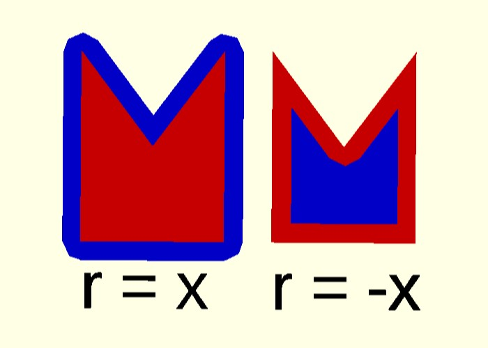

Offset создает новый 2d внутренний или внешний контур на основе существующего контура. Существует два режима работы. радиальный и смещенный. Радиальный метод создает новый контур, как если бы окружность некоторого радиуса вращалась вокруг внешнего (r>0) или внутреннего (r<0) исходного контура.
offset(r = x) (figure)
offset(r = -x) (figure)
примеры:
a = polygon(points = [[0, 0], [20, 0], [10, 7.5], [20, 15], [0, 15]])
a = offset(r = 2) (a)
a = polygon(points = [[0, 0], [20, 0], [10, 7.5], [20, 15], [0, 15]])
a = offset(r = -2) (a)